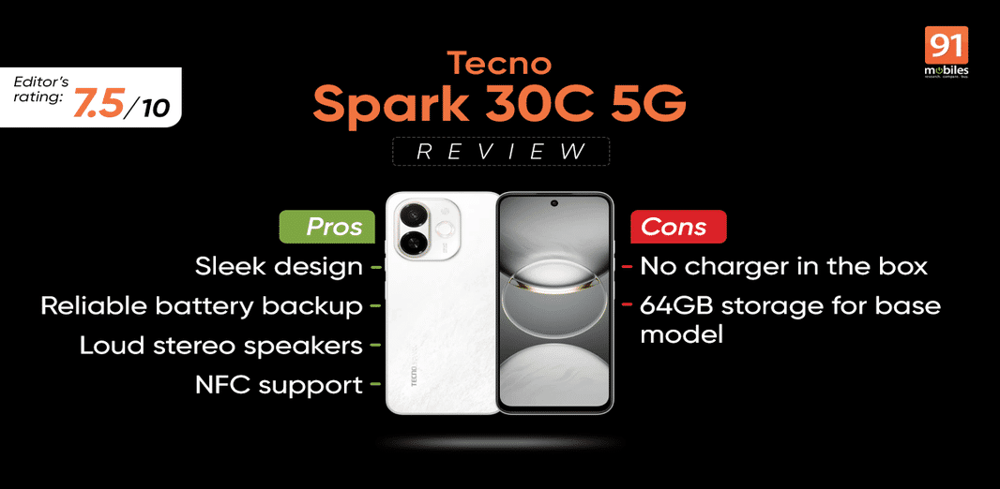

In less than six months, Tecno has introduced another smartphone in its budget-focused “Spark C” series. The latest offering, the Tecno Spark 30C (priced Rs 9,998 onwards), features two significant upgrades, the most notable being 5G support at this price point. Additionally, the display is slightly larger and boasts 120Hz refresh rate for an improved viewing and scrolling experience.
However, the new upgrades come with a few compromises, which are difficult to ignore as we approach 2025. Firstly, the base model offers only 64GB of internal storage. Tecno has also become the latest smartphone OEM to skip the charger in the box. That means the effective price increases slightly, as you’ll need to buy a charger separately if it’s not already available. Read on to know more.
The Tecno Spark 30 5G is a decent choice for those who want to experience 5G internet speeds at an aggressive price. The phone also deserves credit for expanding features like NFC and IR blaster at the Rs 10,000 price point. However, Tecno’s decision to exclude the charger may not sit well with some customers, as it increases the effective price for those upgrading from a basic phone. Additionally, 64GB storage on the base model can feel limiting as we approach 2025.
The Tecno Spark 30C 5G features a sleek design, with the back panel boasting a modern look. Based on appearance, it matches the aesthetics of peers occupying pricier segments. Its flat edge design and vertically stacked rear camera cutouts heavily draw inspiration from the iPhone 16 (review).

I also believe Tecno successfully elevates the design with a gold ring around the lens cutouts, which complements the colour scheme.
I reviewed the special edition with the Transformer skin, and there are other options, including Aurora Cloud Blue and Midnight Shadow black. I prefer the Aurora Cloud white variant for its minimalist appeal.
The Tecno Spark 30C 5G includes a 3.5mm audio jack alongside the usual ports and buttons (USB-C, volume rocker, and power button). The phone also offers improved durability with an IP54 rating for protection against dust and water – a thoughtful upgrade over Tenco Spark 20C’s IP53 rating.
Tecno even provides a protective case in the box for increased durability. The display has an additional film for protection against scratches. However, the viewing experience is average at best, despite a taller design and higher refresh rate support. The bezels across the screen are prominent, though that’s common across smartphones at this price point.
I compared its display performance against the Moto G45 5G (review), Itel P55+ (review), and Realme Narzo N63 (review). The Tecno Spark 30C 5G surprisingly offered the brightest output both indoors and outdoors, but the Moto G45 5G reproduced the punchiest colours despite utilising the same IPS display technology with HD+ resolution (720 x 1,600 pixels). There’s a slight difference in the pixel per inch as the Spark 30C 5G features a bigger 6.67-inch display.
Based on our test, the Motorola smartphone is a better choice for watching movies or shows, but the Tecno Spark 30C is a decent choice for reading, thanks to its large screen. Continuing the Spark 20C’s legacy, the new iteration offers excellent speakers (stereo) with even Dolby Atmos support. The audio gets super loud with moderately pronounced bass.
Unlike the Tecno Spark 20C, the Spark 30C 5G has a single 48MP camera on the back. There is a cutout for a second camera unit, but it mainly serves a decorative purpose. The primary camera uses a Sony IMX582 sensor and supports autofocus. The front includes an 8MP snapper capable of shooting HDR shots. Like most smartphones in the segment, there’s no dedicated ultra-wide camera.
Overall, the Tecno Spark 30C 5G’s camera performs surprisingly well, especially for its price.
In bright conditions, photos are vibrant (though sometimes a little oversaturated) and sharp, with good dynamic range. The 48MP main camera even produces a pleasing background blur, similar to portrait mode, without needing to switch modes. While its images with human subjects look good, it can occasionally struggle with balancing exposure, a common issue in this price range. The Spark 30C 5G also does an impressive job detecting Indian skin complexion.
I am equally impressed by its low-light performance. Without night mode, its photos feature low noise and the colours look decent. There are limitations in terms of details, which is common at this price point. Selfies in daylight look quite social media-ready, but they may appear dull or hazy in low-light conditions.
I compared the camera performance against the Moto G45, Realme Narzo N63, and Itel P55+, and here’s what I found.
Compared to the Itel P55+ and Narzo N63, the Spark 30C 5G’s colours look more balanced and natural. The mild saturation in its photo may also remind you of a warm summer day.
Nearly all smartphones operate in a similar environment based on details and sharpness.
If you look at its photo side by side against the Moto G45, differences are not easily distinguishable.
However, with night mode enabled, the Tecno Spark 30C 5G does surprisingly well at maintaining sharpness without increasing noise.
The Moto G45 5G again comes closest to its night shot, but the Spark 30C 5G handles lens flare more efficiently.
I f I leave 5G support aside, the Spark 30C 5G is a decent smartphone with surprisingly impressive cameras, considering the price. Its battery performance was equally reliable, though I hoped to see a charger in the box.
For daily tasks, which include using WhatsApp and web browsing, the Spark 30C 5G with the Dimensity 6300 SoC should easily suffice. I will recommend choosing the 128GB variant to accommodate those WhatsApp forwards as manually managing storage can be tedious. As I mentioned, the phone’s camera performance was surprisingly good, if not better than the Moto G45 5G. Also, for fast charging (plus charger in the box), the Realme Narzo N63 or Itel P55+ are relatively better options.
However, if you also want to experience features like NFC and IR blaster at an aggressive price point, the Spark 30C 5G has it all.